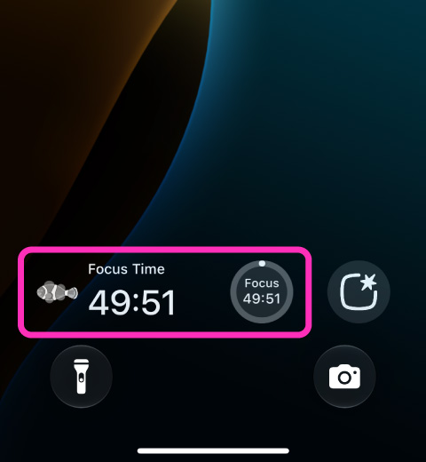
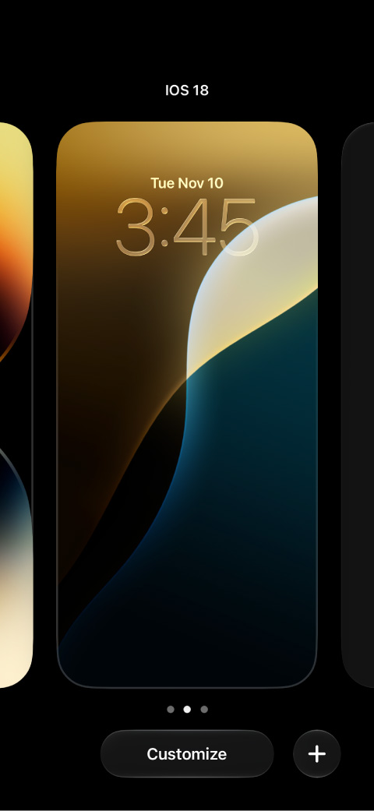
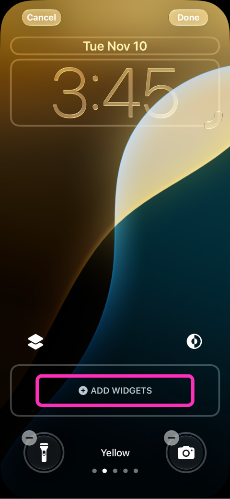
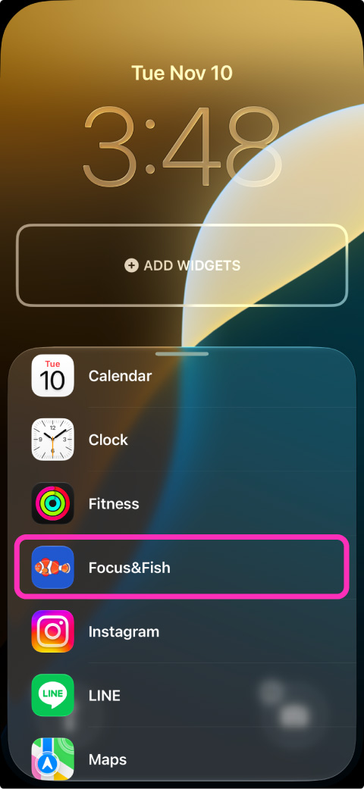
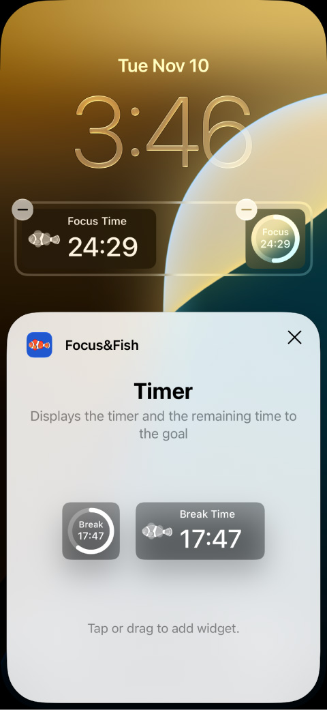
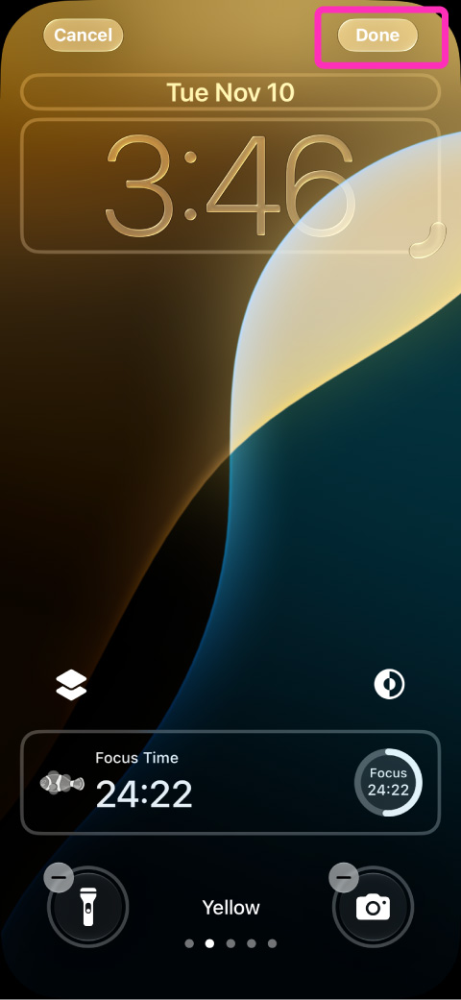
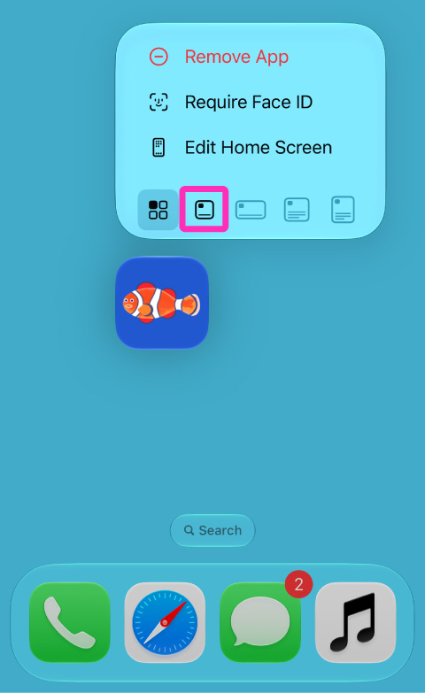
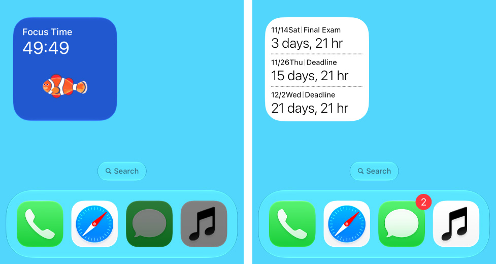
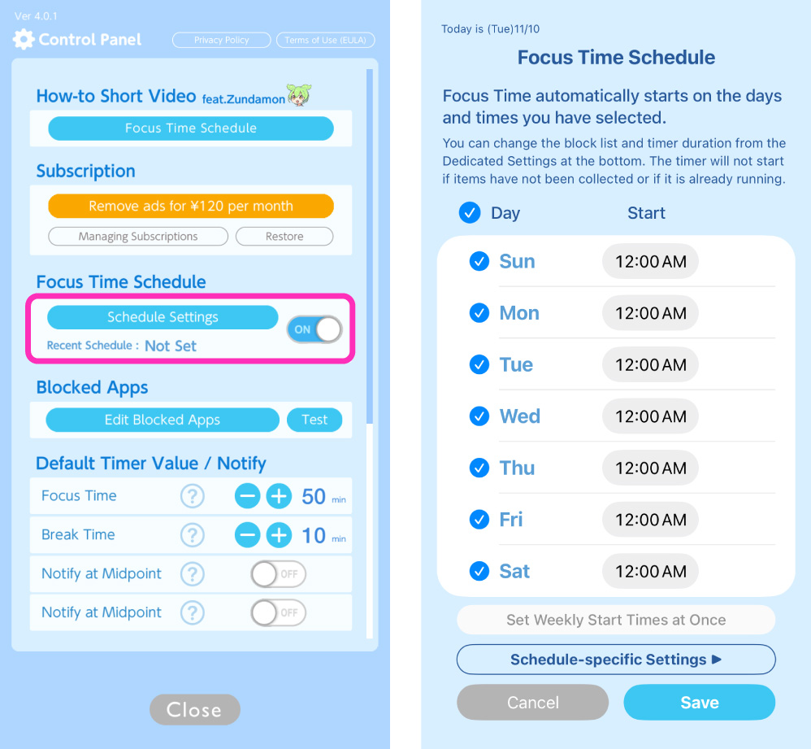

便利な使い方目次
iPhoneを開くことなく、タイマーを確認できます。

iPhoneを閉じて画面を長押し。

「ウィジェットを追加」をタップ

リストから「スマやめ」を探してタップ

大小2種類のウィジェットがあるので好きな方を選択

最後に画面右上の「完了」を押すのを忘れないで

ホーム画面のアイコンを長押ししてホーム画面ウィジェットにすることができます。

ウィジェットではタイマーの残り時間やチャート画面でセットした締切までの残り時間が確認できます。

設定画面のスケジュールをONにしてスケジュール設定画面を開きます。
この画面では任意の曜日、任意の時間に集中タイムを自動で開始させる設定ができます。
「スケジュール用の各種設定」ボタンからはスケジュール専用のブロックアプリと、デフォルトの集中タイム時間を設定できます。
